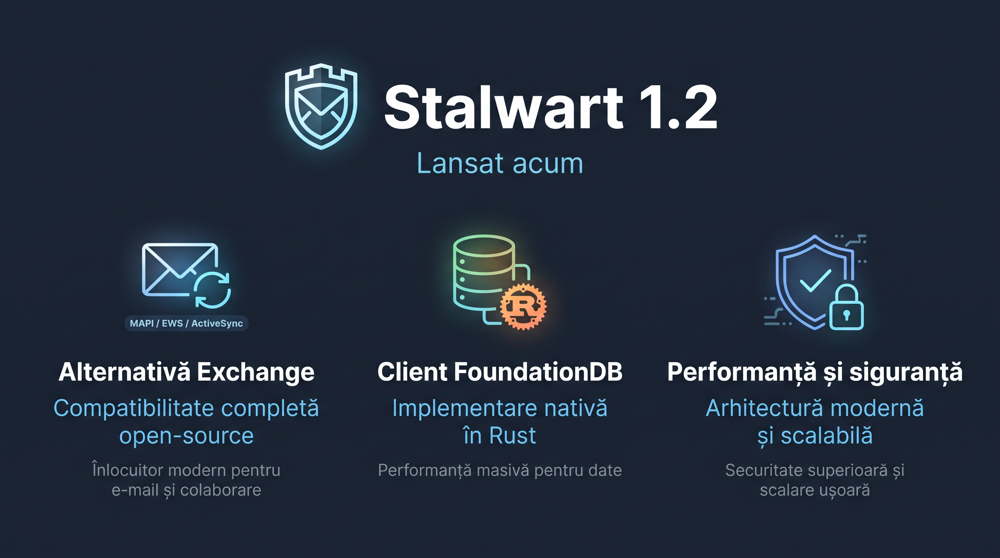

Stalwart 1.2 a fost lansat: Alternativă open-source completă la Microsoft Exchange (MAPI over HTTP, EWS, ActiveSync) și client nativ FoundationDB în Rust

Stalwart, serverul open-source de e-mail și colaborare scris în Rust, a lansat versiunea 1.2, introducând compatibilitate nativă cu protocoalele Microsoft Exchange. Actualizarea permite organizațiilor să își înlocuiască infrastructura Exchange cu o soluție auto-găzduită (self-hosted), păstrând în același timp clienții de e-mail existenți, inclusiv Microsoft Outlook — totul disponibil gratuit în ediția Community licențiată sub AGPL.
1. Compatibilitate cu protocoalele Microsoft Exchange și interoperabilitate
Stalwart 1.2 implementează protocoalele cheie Exchange (dezactivate implicit în pachetele oficiale și configurabile opțional sau excludibile la compilare prin Cargo features), permițând accesarea mesajelor, calendarelor, contactelor, sarcinilor și notițelor printr-un singur cont:
MAPI over HTTP (Outlook pentru Windows): Suportă Outlook 2016 și versiunile ulterioare (inclusiv Outlook din pachetul Microsoft 365 Apps), acoperind căsuțele poștale partajate (shared mailboxes), accesul delegat, sincronizarea calendarelor, agendele de adrese, regulile de inbox și confirmările de citire (read receipts).
Exchange Web Services (EWS) și Exchange ActiveSync (EAS): EWS asigură integrarea cu Outlook pentru Mac, Apple Mail, Thunderbird și Evolution, în timp ce ActiveSync oferă sincronizare nativă pe Android, iPhone și iPad.
Autodiscover: Permite configurarea automată a clienților compatibili doar pe baza adresei de e-mail și a parolei.
Sincronizare bidirecțională cu standardele deschise: Protocoalele Exchange funcționează simultan cu IMAP, JMAP, CalDAV și CardDAV (de exemplu, un e-mail mutat în Outlook este imediat vizibil în IMAP, iar modificările de calendar de pe telefon se reflectă în CalDAV).
Limitări actuale: Nu este suportat noul Outlook pentru Windows (deoarece Microsoft nu îi permite conectarea directă la servere Exchange on-premises) și lipsesc încă funcții precum folderele publice (public folders), căsuțele de arhivare (archive mailboxes), MDM și autentificarea NTLM/Kerberos.
2. Migrare cu Vandelay, reguli server-side și calendare de echipă
Utilitarul de migrare Vandelay: Transferă date din instalațiile Exchange Server on-premises (folosind EWS pentru e-mailuri, calendare și contacte) și din Microsoft 365 (prin Microsoft Graph, inclusiv preluarea fișierelor din OneDrive).
Reguli de e-mail pe server și calendare avansate: Versiunea 1.2 adaugă reguli configurabile pe server (din interfața web, JMAP sau Outlook) pentru mutarea, redirecționarea, respingerea sau categorisirea automată a mesajelor, precum și setări pentru orele de lucru, disponibilitate free/busy la nivel de organizație și conturi de resurse pentru rezervarea sălilor de ședințe sau a echipamentelor.
3. Performanță backend (FoundationDB în Rust) și Stalwart CLI 2.0
Client asincron FoundationDB scris nativ în Rust: Elimină dependența de biblioteca externă a Apple, oferind în testele proiectului un debit (throughput) de 4,5 până la 6,9 ori mai mare pentru operațiunile de citire punctuală (point-read) față de implementarea anterioară.
Stalwart CLI 2.0: O nouă interfață interactivă în terminal pentru administrarea conturilor, domeniilor, configurației serverului și monitorizare fără a fi necesar un browser web.